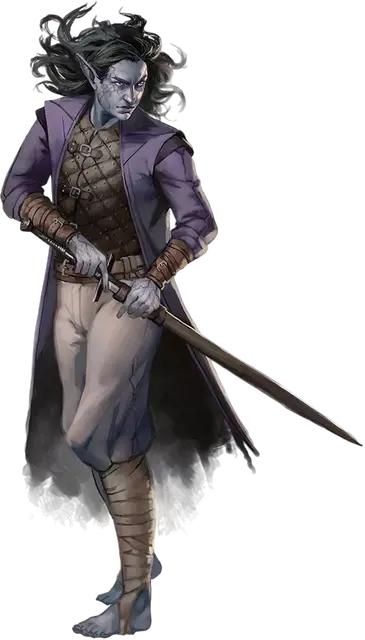

Дроу клинок теней
Drow Shadowblade
Средний Гуманоид (Эльф), обычно нейтрально-злой

Класс Доспеха 17 (проклёпанный кожаный доспех)
Хиты 150 (20к8 + 60)
Скорость 30 футов
| мод | спас | ||
|---|---|---|---|
| СИЛ | 14 | +2 | +2 |
| ЛОВ | 21 | +5 | +9 |
| ТЕЛ | 16 | +3 | +7 |
| мод | спас | ||
|---|---|---|---|
| ИНТ | 12 | +1 | +1 |
| МДР | 14 | +2 | +6 |
| ХАР | 13 | +1 | +1 |
Навыки Восприятие +6, Скрытность +9
Чувства тёмное зрение 120 футов, пассивное Восприятие 16
Языки Подземный, Эльфийский
Опасность 11 (7200 опыта)
Бонус мастерства +4
Среда обитания Подземье
Особенности
Дьявольское зрение. Магическая тьма не мешает тёмному зрению дроу.
Наследие фей. Дроу совершает с преимуществом спасброски от очарования, и магия не может его усыпить.
Чувствительность к солнечному свету. Находясь на солнечном свету, дроу совершает с помехой броски атаки, а также проверки Мудрости (Восприятие), полагающиеся на зрение.
вариант: призыв теневого демона. У некоторых дроу клинков теней есть действие, позволяющее им призывать демона.
Призыв теневого демона (1/день). Дроу пытается магическим образом призвать теневого демона [shadow demon] с шансом на успех 50 %. При проваленной попытке, дроу получает психическим урон 5 (1к10). В ином случае, в свободном пространстве на расстоянии 60 футов от призывателя появляется демон, служащий союзником для призывателя, и не может призывать других демонов. Демон призывается на 10 минут, пока он или его призыватель не умрёт, либо пока призыватель, потратив действие, не отпустит его.
Действия
Мультиатака. Дроу совершает три атаки Теневым мечом. Одна из этих атак может быть заменена атакой Ручным арбалетом. Дроу так же может с помощью Использования заклинаний наложить заклинание тьма [darkness].
Теневой меч. Рукопашная атака оружием: +9 к попаданию, досягаемость 5 футов или дистанция 30/60 футов, одна цель. Попадание: 27 (7к6 + 5) урона некротической энергией.
Ручной арбалет. Дальнобойная атака оружием: +9 к попаданию, дистанция 30/120 фт., одна цель. Попадание: 8 (1к6 + 5) колющего урона, и цель должна преуспеть в спасброске Телосложения Сл 13, иначе будет отравленной в течение 1 часа. Если спасбросок провален на 5 и более, цель также становится бессознательной, пока отравлена таким образом. Цель приходит в сознание, если получает урон или другое существо действием разбудит её.
Использование заклинаний. Дроу накладывает одно из следующих заклинаний, используя Харизму в качестве базовой характеристики и без использования материальных компонентов (Сл спасброска от заклинаний 13):
• Неограниченно: пляшущие огоньки [dancing lights], тьма [darkness];
• 1/день каждое: огонь фей [faerie fire], левитация [levitate] (только на себя).
Бонусные действия
Шаг в тень. В тусклом свете или во тьме дроу может бонусным действием телепортироваться на свободное пространство расстоянием до 60 фт. в пределах его видимости, и которое также находится во тьме или в тусклом свете. Свою первую рукопашную атаку до конца текущего хода он совершает с преимуществом.
Описание
Дроу Клинок теней скрывается в тёмных проходах Подземья, намереваясь посеять хаос. Безжалостные убийцы – клинки теней находят работу у благородных домов, и это, как правило, связано с устранением конкурента в другом доме. Также, клинки теней защищают анклавы и города Подземья от врагов и выслеживают воров, похитивших ценные сокровища. Не важно, кому они служат, они перемещаются незамеченными, пока не нападут на свою жертву, и становятся единственной вещью, которую перед собой увидит павшая жертва.
Клинок теней использует тёмную магию, которая, по слухам, исходит из ритуалов исчадий, где дроу убивает низшего демона и таинственным образом, не допускает того переродиться в Бездне. Этот ритуал создаёт теневого демона и наделяет дроу теневой магией.